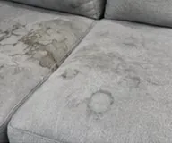
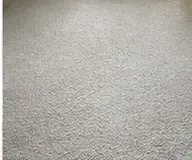
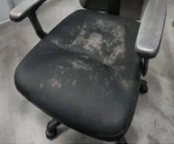
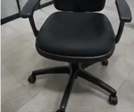

Nos réalisations
Des interventions réelles, réalisées chez nos clients particuliers et professionnels. Faites glisser le curseur pour comparer l'avant et l'après.


Nos autres chantiers





Sur le terrain
Quelques images de nos interventions, prises pendant le travail.
Une intervention complète, filmée
Les photos montrent le résultat ; la vidéo montre le travail. Une minute sur une intervention réelle : un matelas, un canapé, puis des vitres.
C'est le même protocole que celui décrit sur nos pages de prestation, et il vaut mieux le voir que le lire : la couleur de l'eau qui ressort dans la cuve dit mieux que n'importe quel argumentaire ce que l'injection-extraction retire réellement d'un textile.
Ce que montrent — et ne montrent pas — ces photos
Toutes ces images viennent de chantiers réels, chez des clients particuliers et professionnels. L'avant et l'après sont pris au même endroit, sous la même lumière, à quelques heures d'intervalle. Nous n'associons jamais deux photos qui ne proviennent pas de la même intervention : ce serait montrer un résultat qui n'a pas eu lieu.
Il faut aussi dire ce qu'un nettoyage ne fait pas. Une fibre brûlée, un cuir craquelé, une pierre rongée par le gel ou un vernis parti ne reviennent pas : le nettoyage retire ce qui s'est déposé, il ne reconstitue pas ce qui a disparu. Quand nous voyons ce type de dégât sur vos photos, nous vous le disons au devis, avant l'intervention, plutôt que de vous laisser l'espérer.
Les méthodes employées sur ces chantiers
- Injection-extraction pour les textiles : on injecte une solution dans la fibre puis on l'aspire immédiatement avec la saleté dissoute. Pas d'auréole, parce qu'il ne reste pas d'eau stagnante. Voir le guide dédié.
- Vapeur à haute température pour les surfaces dures et les recoins : elle décolle le gras sans détergent agressif.
- Haute pression réglée selon le support pour les extérieurs : le réglage change du tout au tout entre une dalle béton et une pierre tendre.
- Eau osmosée pour les vitres : privée de ses minéraux, elle sèche sans rien déposer. Voir pourquoi ça marche.
Le détail par prestation figure sur nos pages de prestations, avec ce qui est inclus et les tarifs correspondants.
Pourquoi nous n'affichons pas d'avis clients inventés
Beaucoup de sites de nettoyage affichent des témoignages avec prénom, photo et note. Il est impossible pour un visiteur de savoir s'ils sont réels. Nous avons choisi de ne publier que ce qui est vérifiable : notre fiche d'établissement Google, où les avis sont attachés à des comptes que nous ne contrôlons pas et que vous pouvez consulter vous-même.
Le même principe vaut pour les photos ci-dessus. Aucun avant/après de cette page n'associe deux clichés sans rapport : chaque paire provient d'une même intervention, prise au même endroit. C'est une contrainte que nous nous imposons, et elle explique pourquoi cette page compte moins d'images que celle de certains confrères.
Nos avis Google
Tous nos avis sont publics et vérifiés sur Google : aucun témoignage n'est reproduit ici sans sa source.
Nous ne publions aucun avis rédigé par nos soins. Nos retours clients sont consultables dans leur intégralité sur notre fiche Google, avec le nom et la date de chacun.
Un besoin de nettoyage ?
Devis gratuit et sans engagement, réponse sous 24 h. Nous intervenons 7j/7 à Paris et dans toute l'Île-de-France.